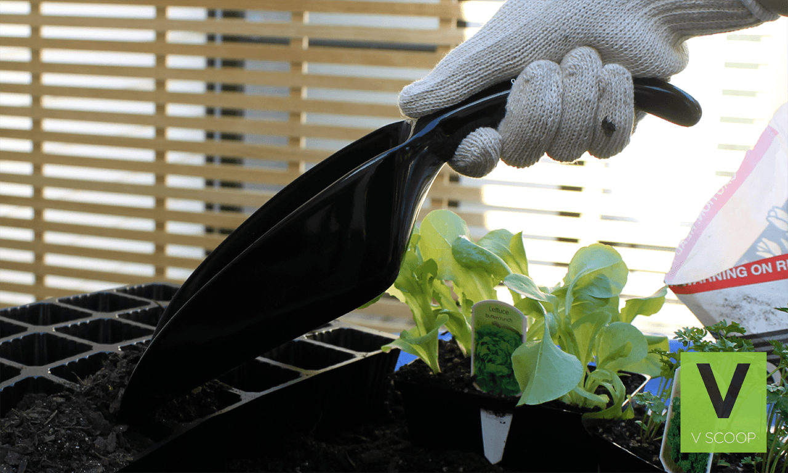
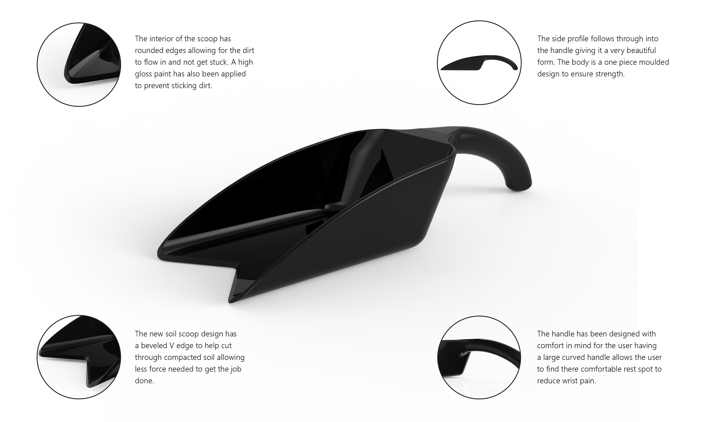
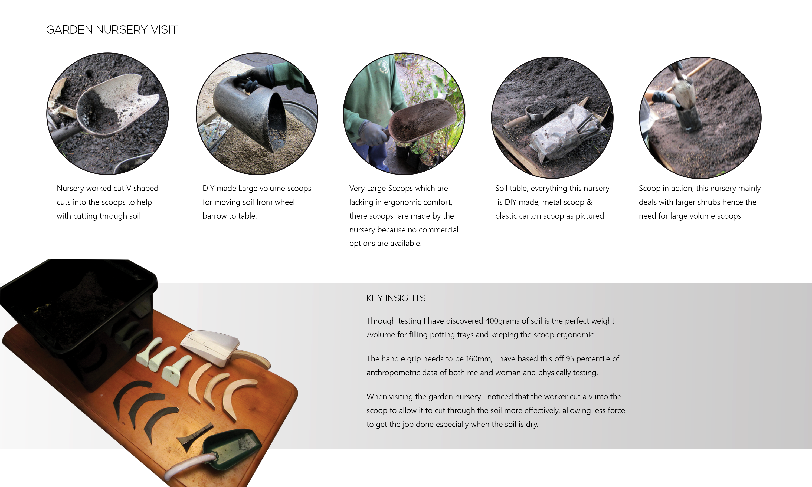
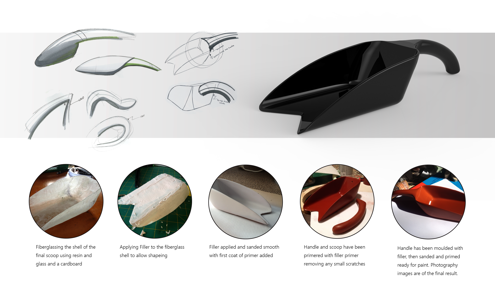

V SCOOP
The garden tool in question; through research, interviews and testing, I have found ergonomic issues, size issues, quality issues with the soil scoop. The majority of plant nurseries construct their own scoops or use scoops commonly used for other purposes. The main reason for this is because of the quality and the sizes available are too small for an professional application. Lastly the ergonomic issues include wrist and elbow pain. My design goal is to provide a solution to these issues and have my tool fit into the McGregor's garden tool range.






